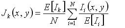
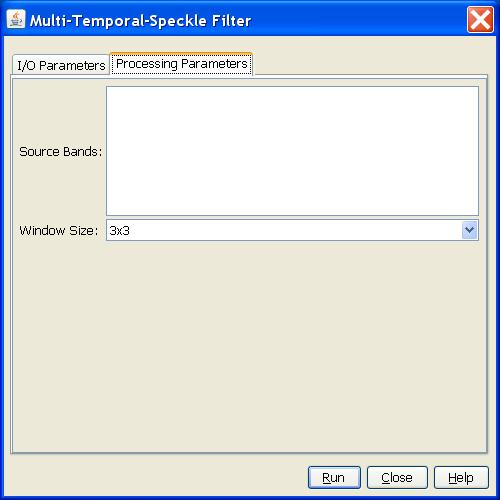

| Speckle Filter | |
SAR images have inherent salt and pepper like texturing called speckles which degrade the quality of the image and make interpretation of features more difficult. The speckles are caused by random constructive and destructive interference of the de-phased but coherent return waves scattered by the elementary scatters within each resolution cell. Multi-temporal filtering is one of the commonly used speckle noise reduction techniques.
For a sequence of N registered multitemporal images, with intensity at position (x, y) in the kth image denoted by Ik(x, y), the temporal filtered images are given by:


GPT operator: Multi-Temporal-Speckle-Filter. Generated from the operator source; parameter names are those used in GPT and graph XML.
| Parameter | Type | Default | Allowed values | Unit | Description |
|---|---|---|---|---|---|
sourceBands | String[] | The list of source bands. | |||
filter | String | Lee Sigma | None, Boxcar, Median, Frost, Gamma Map, Lee, Refined Lee, Lee Sigma, IDAN | Filter | |
filterSizeX | int | 3 | (1, 100] | The kernel x dimension | |
filterSizeY | int | 3 | (1, 100] | The kernel y dimension | |
dampingFactor | int | 2 | (0, 100] | The damping factor (Frost filter only) | |
estimateENL | boolean | false | Estimate Equivalent Number of Looks | ||
enl | double | 1.0 | (0, *) | The number of looks | |
numLooksStr | String | 1 | 1, 2, 3, 4 | Number of Looks | |
windowSize | String | 7x7 | 5x5, 7x7, 9x9, 11x11, 13x13, 15x15, 17x17 | Window Size | |
targetWindowSizeStr | String | 3x3 | 3x3, 5x5 | Point target window Size | |
sigmaStr | String | 0.9 | 0.5, 0.6, 0.7, 0.8, 0.9 | Sigma value (probability range) used by the Lee Sigma filter | |
anSize | int | 50 | (1, 200] | The Adaptive Neighbourhood size |